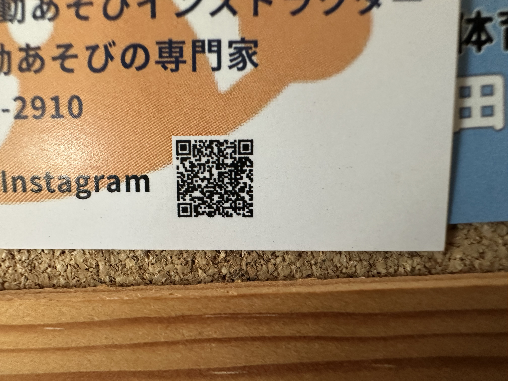
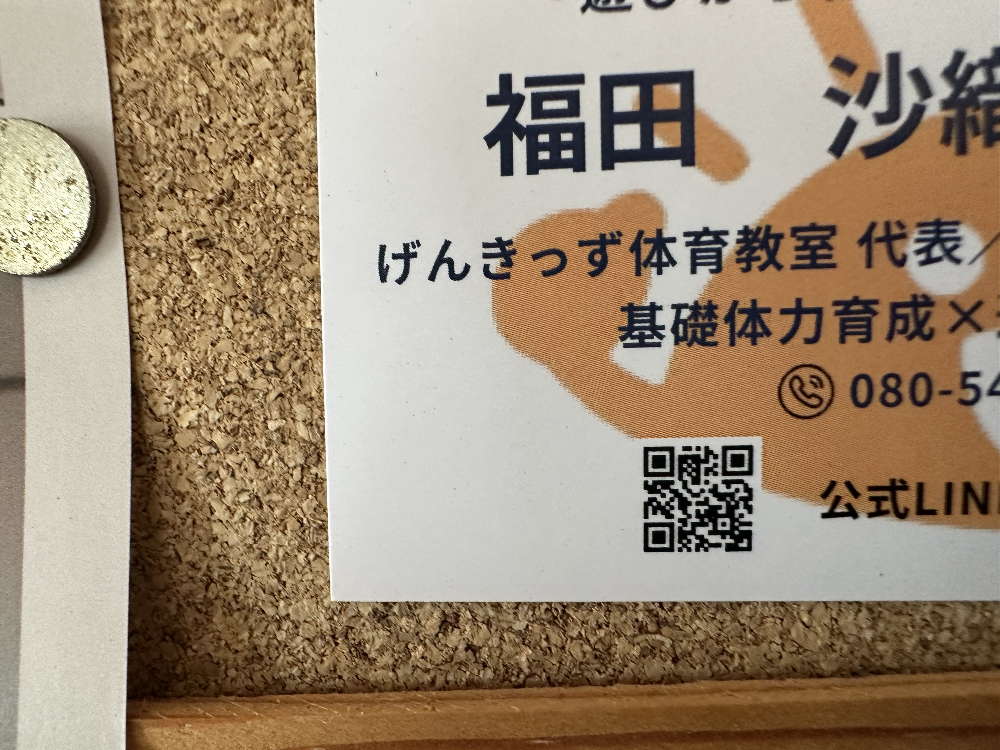

キッズクラス「げんキッズ」
主催・運営：福田沙織先生


RENTAL STUDIO
石岡ダンス教室では、現在もフロアの貸し出しを行っています。講座や利用についての詳細は、確認でき次第ご案内します。
ABOUT THE PROGRAMS
キッズクラスは福田沙織先生、ウーマンボディーラボは竹村園子先生が、それぞれ独立して主催・運営しています。石岡ダンス教室はフロア提供のみで、講座の運営や月謝管理には関与していません。
主催・運営：福田沙織先生


主催・運営：竹村園子先生
DETAILS TO CONFIRM
現在、以下の情報は未確認です。決まり次第、このページを更新します。
PLEASE NOTE
外部講師の講座内容、参加費、申込み、月謝については、各講座の主催者へお問い合わせください。連絡先は確認後に掲載します。
石岡ダンス教室のトップへ戻る →